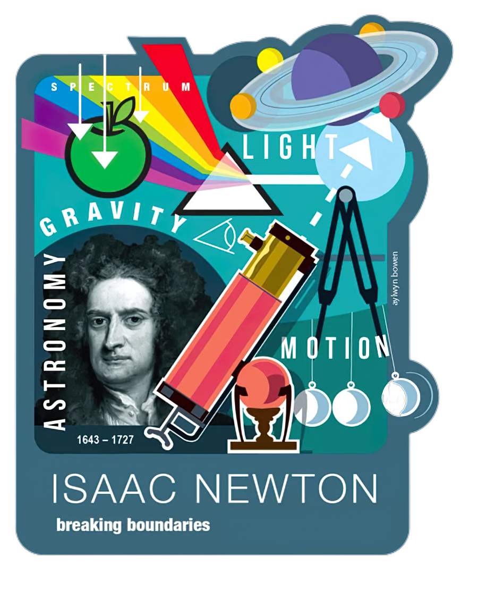

Sir Isaac Newton FRS was an English mathematician, physicist, astronomer, alchemist, theologian,
and author who was described in his time as a natural philosopher.
He was a key figure in the Scientific Revolution and the Enlightenment that followed.
Isaac Newton's life
Boyhood Days
Isaac Newton was born in the manor house of Woolsthorpe, near Grantham in Lincolnshire.
Although by the calendar in use at the time of his birth he was born on Christmas Day 1642,
we give the date of 4 January 1643 in this biography which is the "corrected" Gregorian
calendar date bringing it into line with our present calendar.
Highly Productive Period
It would be easy to think that Newton's talent began to emerge on
the arrival of Barrow to the Lucasian chair at Cambridge in 1663 when
he became a Fellow at Trinity College. Certainly the date matches the
beginnings of Newton's deep mathematical studies.
Highly Paid Official
In 1703 he was elected president of the Royal Society and was
re-elected each year until his death. He was knighted in 1705
by Queen Anne, the first scientist to be so honoured for his work.
ROLE of Issac Newton in Science
His mind was ablaze with original ideas. He made significant progress in three distinct fields – with some of the most profound discoveries in:
Calculus
Sir Isaac Newton was the first individual to develop calculus.
Modern physics and physical chemistry are almost impossible without calculus,
as it is the mathematics of change.
Gravity
The famous apple that he saw falling from a tree led him to discover the force of gravitation and
its laws. Ultimately, he realised that the pressure causing the apple’s fall is responsible for
the moon to orbit the earth, as well as comets and other planets to revolve around the sun.

Contribution to Science
Optics
White light can be split into the colours of the rainbow!
You’ll learn about this property in higher classes, known as
the ‘splitting of white light’.This observation and inference were first given by Newton
Laws of Motion
Isaac Newton proposed the three laws of motion, famously known as Newton’s Law of Motion.
These laws revolutionised the motion of objects. Though these are considered simple
observations in the present day, these were complex ideas to be put in the form of
laws back in the days.
Reflective Telescope
From his earlier understanding of refraction (bending) of light and splitting of white
light, Newton understood that the refractive telescope found by Galileo (another famous
scientist around that time) had a few limitations. He applied his knowledge of optics to
invent the reflective telescope.
Recognition & Legacy
Achievements
Prominent English physicist Sir Isaac Newton received several awards and honors such as a
knighthood, the top mathematics professor at Cambridge University,
admission to the Royal Society, a seat in Parliament and burial in Westminster Abbey.
Recognition
Sir Isaac Newton received many awards during his lifetime.
He was knighted by Queen Anne in 1705. He was the second scientist to be knighted,
the first being Francis Bacon. He was also made President of the Royal Society and
was an Associate of the French Académie des Sciences.
Legacy
Newton's theory of gravity helped us understand many things about the universe.
Force is measured in Newtons in honour of the incredible scientist.